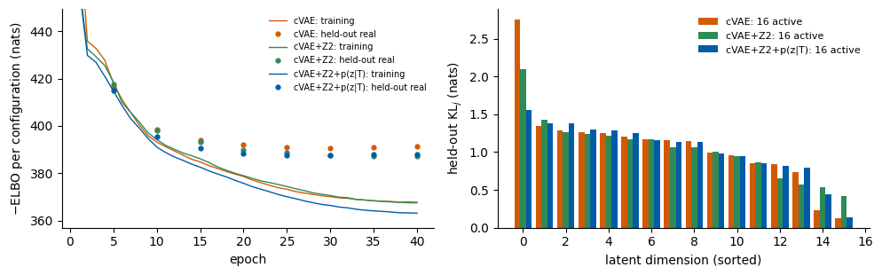
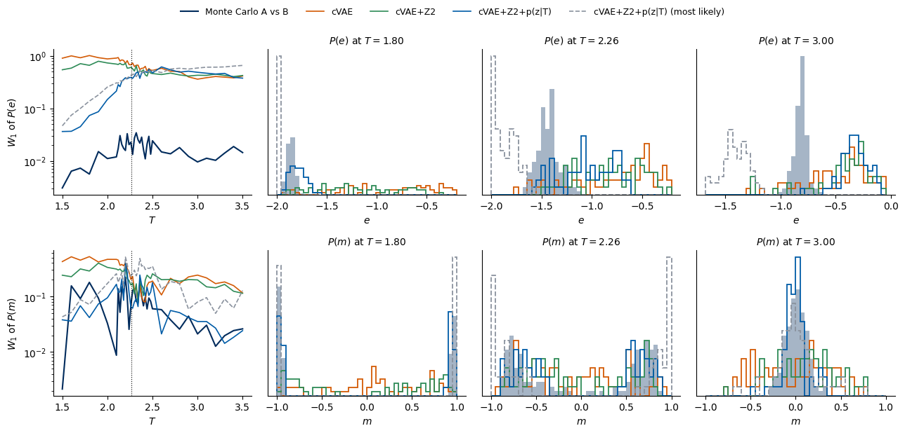
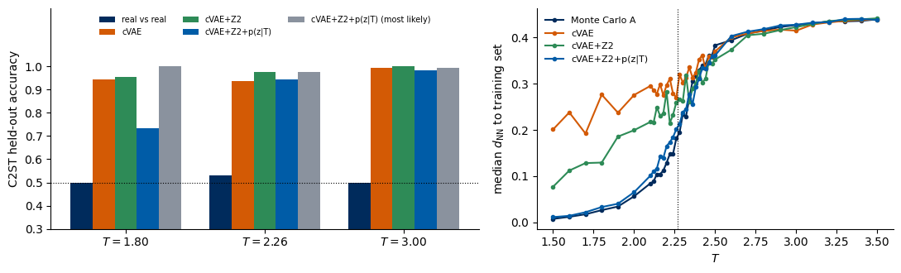
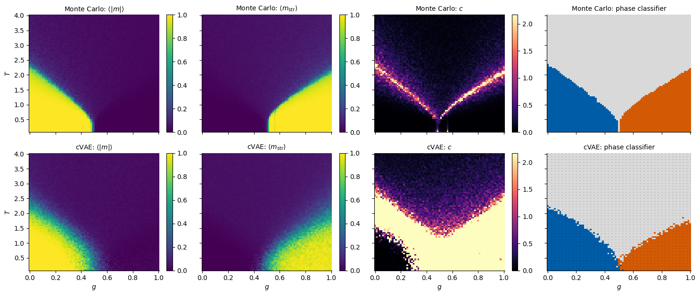
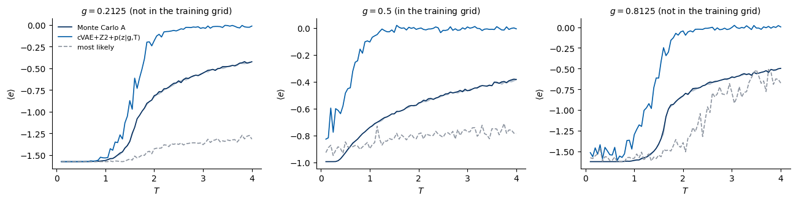

Lab 025 — Synthetic spin configurations from a conditional VAE: tested against the Hamiltonian
A conditional variational autoencoder (cVAE, Lab 024) produces new configurations of a spin model at a requested temperature \(T\), or at a requested point \((g,T)\) of a phase diagram. A generated snapshot can look like a Monte Carlo snapshot and still violate the physics fixed by the Hamiltonian. This lab tests the synthetic data in two independent ways:
with networks trained on real Monte Carlo data: a regressor that reads \(T\) from a snapshot and classifiers of the phase;
with the Hamiltonian itself: energy, magnetisation, specific heat, susceptibility, Binder cumulant, the distributions \(P(e)\) and \(P(m)\) and the correlation function, computed from the snapshots.
Every test is run first on held-out real data (this fixes the baseline and the statistical noise), then, identically, on synthetic data at the same conditions. Before the physics we check that the generator is trained properly (training curves, active latent units, a classifier two-sample test, memorisation).
Models: the 2D Ising model (\(L=30\), Part A) and the frustrated \(J_1\)–\(J_2\) Ising model (\(L=32\), Part B), with the Monte Carlo data of Lab 018.
Data. Run Lab 018 and copy ising_L30.npz and j1j2_L32.npz into data/. Everything runs on the CPU.
A classical spin model assigns an energy \(H(\mathbf s)\) to every configuration \(\mathbf s=(s_1,\dots,s_N)\), \(s_i=\pm1\), on an \(L\times L\) lattice with periodic boundaries (\(N=L^2\)): \[
\text{Ising: } H=-J\sum_{\langle ij\rangle}s_is_j,\qquad
J_1\text{–}J_2:\ H=-J_1\sum_{\langle ij\rangle}s_is_j+J_2\sum_{\langle\langle ij\rangle\rangle}s_is_j ,
\] with \(\langle ij\rangle\) nearest neighbours and \(\langle\langle ij\rangle\rangle\) diagonal neighbours; \(J=J_1=1\), \(k_B=1\). In thermal equilibrium at temperature \(T\) (inverse temperature \(\beta=1/T\)) a configuration occurs with the Boltzmann probability\[
p(\mathbf s)=\frac{e^{-\beta H(\mathbf s)}}{Z},\qquad Z=\sum_{\mathbf s}e^{-\beta H(\mathbf s)} .
\] Low \(T\): low-energy (ordered) configurations dominate; high \(T\): all configurations become nearly equally likely (disorder). Monte Carlo produces samples from \(p(\mathbf s)\); a generator should produce samples from the same distribution. What the observables measure:
observable
physical meaning
\(e=H/N\)
energy per spin: counts satisfied and broken bonds (local structure)
\(m=\frac1N\sum_i s_i\)
magnetisation: ferromagnetic order (large below \(T_c\), small above)
\(m_{\rm str}\)
stripe order of the \(J_1\)–\(J_2\) model (spins alternating along one lattice direction)
\(c=N\,\mathrm{Var}(e)/T^2\)
specific heat: energy fluctuations, peaks at a transition
\(\chi=N\,\mathrm{Var}(\lvert m\rvert)/T\)
susceptibility: magnetisation fluctuations, peaks at a transition
spin–spin correlation at distance \(r\): how far order extends
For the 2D Ising model the transition is exactly known (Onsager): \(T_c=2/\ln(1+\sqrt2)\approx2.269\).
0b. Recap: the conditional ELBO for spins
A configuration \(\mathbf s=(s_1,\dots,s_N)\), \(s_i=\pm1\), is stored as bits \(b_i=(s_i+1)/2\in\{0,1\}\). The condition is \(c\) (\(c=T\) for Ising, \(c=(g,T)\) for \(J_1\)–\(J_2\)). The cVAE has three parts:
prior \(p(\mathbf z)=\mathcal N(\mathbf 0,\mathbb 1)\) over a latent vector \(\mathbf z\in\mathbb R^{d}\),
decoder \(p_\theta(\mathbf s\mid\mathbf z,c)=\prod_{i=1}^N \sigma(\ell_i)^{b_i}\,\big(1-\sigma(\ell_i)\big)^{1-b_i}\), with one logit \(\ell_i(\mathbf z,c)\) per site and \(\sigma(\ell)=1/(1+e^{-\ell})\),
For every training configuration (Lab 024 derives this bound in full) \[
\log p_\theta(\mathbf s\mid c)\;\ge\;\mathbb E_{q_\phi(\mathbf z|\mathbf s,c)}\big[\log p_\theta(\mathbf s\mid\mathbf z,c)\big]\;-\;
\mathrm{KL}\big(q_\phi(\mathbf z\mid\mathbf s,c)\,\|\,p(\mathbf z)\big)\;=\;\mathrm{ELBO},
\]\[
\log p_\theta(\mathbf s\mid\mathbf z,c)=\sum_{i=1}^N\Big[b_i\log\sigma(\ell_i)+(1-b_i)\log\big(1-\sigma(\ell_i)\big)\Big],\qquad
\mathrm{KL}=\frac12\sum_{j=1}^{d}\big(\sigma_j^2+\mu_j^2-1-\log\sigma_j^2\big).
\] Here \(p(\mathbf z)=\mathcal N(0,\mathbb 1)\); in A.4 we also use a prior that depends on the condition, \(p_\psi(\mathbf z\mid c)\), and the KL term is then taken with respect to it. We minimise \(-\mathrm{ELBO}\) averaged over the data, with \(\mathbf z=\boldsymbol\mu+\boldsymbol\sigma\odot\boldsymbol\epsilon\), \(\boldsymbol\epsilon\sim\mathcal N(0,\mathbb 1)\) (reparametrisation). Generation at a condition \(c\): draw \(\mathbf z\) from the prior, compute the logits, draw every spin from its Bernoulli distribution. Alternatively take the most likely configuration\(\hat s_i=\mathrm{sign}\,\ell_i\).
The physics behind the tests. The generator defines a model distribution \(p_\theta(\mathbf s\mid c)=\int d\mathbf z\,p(\mathbf z)\, p_\theta(\mathbf s\mid\mathbf z,c)\) that should approximate the Boltzmann distribution \(p(\mathbf s)=e^{-\beta H(\mathbf s)}/Z\). At fixed \(\mathbf z\) the decoder is a product over sites, the same structure as a mean-field ansatz: \(\langle s_i\rangle_{\mathbf z}=\tanh(\ell_i/2)\) and \[
\langle s_is_j\rangle_{\mathbf z}=\tanh(\ell_i/2)\tanh(\ell_j/2)\quad (i\neq j),\qquad
\mathrm{Cov}(s_i,s_j)=\mathrm{Cov}_{\mathbf z}\big(\tanh(\ell_i/2),\tanh(\ell_j/2)\big).
\] All correlations between spins must be carried by the few latent variables \(\mathbf z\). The energy \(H=-J\sum_{\langle ij\rangle}s_is_j\) is a sum of nearest-neighbour correlations; a site-independent Bernoulli draw breaks bonds at random. This is why the energy, the specific heat and \(G(r)\) are the sharp tests here.
Code
import osos.environ["JAX_PLATFORMS"] ="cpu"# must be set before jax is importedimport time, jsonimport numpy as npimport matplotlib.pyplot as pltfrom matplotlib.colors import ListedColormapimport jax, jax.numpy as jnpimport optaxfrom flax import nnxT_START = time.time()print("JAX", jax.__version__, "| devices:", jax.devices())navy, blue, orange, grey, green ="#002B5C", "#005CA7", "#D35A05", "#8A929E", "#2E8B57"SPIN = ListedColormap(["#FFFFFF", navy]) # s = -1 white, s = +1 navyplt.rcParams.update({"axes.spines.top": False, "axes.spines.right": False, "font.size": 10})OUT, DATA ="../beamer/figures", "data"os.makedirs(OUT, exist_ok=True)NUMBERS = {} # every number quoted on the slides is stored heredef save(fig, name): fig.savefig(f"{OUT}/{name}", dpi=180, bbox_inches="tight")TC =2.0/ np.log(1.0+ np.sqrt(2.0)) # Onsager: T_c = 2.2692 (J = k_B = 1)def unpack_spins(packed, L):'''Packed bits (..., L, ceil(L/8)) uint8 -> spins (..., L, L) int8 with values -1, +1.''' bits = np.unpackbits(packed, axis=-1, count=L) # (..., L, L) in {0, 1}return bits.astype(np.int8) *2-1
JAX 0.11.0 | devices: [CpuDevice(id=0)]
Part A: the 2D Ising model
A.1 Data and split
ising_L30.npz holds 256 Swendsen–Wang configurations at each of 37 temperatures, \(T\in[1.5,3.5]\), denser near \(T_c\). Per temperature we split them into
S_train (128): training set of the generator and of the evaluator networks,
S_A, S_B (64 each): two independent held-out real sets. S_A is the reference for every test; the difference between S_A and S_B measures the statistical noise of a 64-snapshot estimate (real-vs-real baseline).
data = np.load(f"{DATA}/ising_L30.npz")L =int(data["L"]); N = L * Lorder = np.argsort(data["T"])T_grid = data["T"][order] # (37,)S_all = unpack_spins(data["configs"], L)[order] # (37, 256, 30, 30) int8n_T, n_per_T = S_all.shape[:2]rng = np.random.default_rng(0)perm = rng.permutation(n_per_T) # the same random split at every temperatureS_train = S_all[:, perm[:128]] # (37, 128, 30, 30)S_A = S_all[:, perm[128:192]] # (37, 64, 30, 30) held-out referenceS_B = S_all[:, perm[192:]] # (37, 64, 30, 30) second held-out set (noise level)assert S_train.shape == (n_T, 128, L, L) and S_A.shape == S_B.shape == (n_T, 64, L, L)i_c =int(np.argmin(np.abs(T_grid - TC))) # grid temperature closest to T_cprint(f"{n_T} temperatures, T from {T_grid[0]} to {T_grid[-1]}; closest to T_c = {TC:.4f}: T = {T_grid[i_c]}")print(f"per temperature: {S_train.shape[1]} training, {S_A.shape[1]} + {S_B.shape[1]} held-out real configurations")
37 temperatures, T from 1.5 to 3.5; closest to T_c = 2.2692: T = 2.26
per temperature: 128 training, 64 + 64 held-out real configurations
A.2 Observables fixed by the Hamiltonian
For one snapshot, with each nearest-neighbour bond counted once (right and down neighbour, periodic boundaries), \[
e=\frac{H}{N}=-\frac1N\sum_{\langle ij\rangle}s_is_j\in[-2,2],\qquad m=\frac1N\sum_i s_i .
\] For a set of snapshots at one temperature (\(k_B=J=1\)): \[
\langle e\rangle,\quad \langle|m|\rangle,\quad c=\frac{N}{T^2}\big(\langle e^2\rangle-\langle e\rangle^2\big),\quad
\chi=\frac{N}{T}\big(\langle m^2\rangle-\langle|m|\rangle^2\big),\quad U_4=1-\frac{\langle m^4\rangle}{3\langle m^2\rangle^2},
\] and the correlation function along the lattice axes, \(G(r)=\langle s_{\mathbf x}\,s_{\mathbf x+r\hat{\mathbf e}}\rangle\) (averaged over \(\mathbf x\), both axes and snapshots), \(r=0,\dots,L/2\).
ising_observables(S, T) takes S of shape (n_T, n, L, L) and T of shape (n_T,) and returns per-temperature averages (shape (n_T,)), the per-snapshot \(e\) and \(m\) (shape (n_T, n)) and \(G\) (shape (n_T, L/2+1)).
Code
def ising_observables(S, T):'''Observables of the 2D Ising model (J = 1) for snapshots S (n_T, n, L, L) at temperatures T (n_T,).''' s = S.astype(np.float32) n_sites = s.shape[-1] * s.shape[-2]# each bond once: right neighbour (axis -1) and down neighbour (axis -2); np.roll implements periodic boundaries e =-(s * np.roll(s, 1, axis=-1) + s * np.roll(s, 1, axis=-2)).mean(axis=(-1, -2)) # (n_T, n) m = s.mean(axis=(-1, -2)) # (n_T, n) T = np.asarray(T, np.float64) obs = {"e": e.mean(1),"m": np.abs(m).mean(1),"c": n_sites * e.var(1) / T**2,"chi": n_sites * ((m**2).mean(1) - np.abs(m).mean(1) **2) / T,"U4": 1.0- (m**4).mean(1) / (3.0* (m**2).mean(1) **2),"e_samples": e, "m_samples": m}# G(r): average of s_x s_{x+r} over sites, both axes and snapshots -> (n_T, L/2 + 1) obs["G"] = np.stack([0.5* ((s * np.roll(s, r, -1)).mean((-1, -2, -3)) + (s * np.roll(s, r, -2)).mean((-1, -2, -3)))for r inrange(s.shape[-1] //2+1)], axis=1)return obs# sanity checks on configurations whose answers we knowup = np.ones((1, 1, L, L), np.int8)chess = np.where((np.arange(L)[:, None] + np.arange(L)[None, :]) %2==0, 1, -1).astype(np.int8)[None, None]with np.errstate(invalid="ignore"): # U4 = 0/0 for the chessboard (m = 0) o_up, o_chess = ising_observables(up, [1.0]), ising_observables(chess, [1.0])assert np.isclose(o_up["e"][0], -2) and np.isclose(o_up["m"][0], 1) # ground state: every bond satisfiedassert np.isclose(o_chess["e"][0], 2) and np.isclose(o_chess["m"][0], 0) # chessboard: every bond brokenprint("checks passed: all-up e = -2, m = 1; chessboard e = +2, m = 0")
checks passed: all-up e = -2, m = 1; chessboard e = +2, m = 0
Distances between distributions. Averages can agree while the distributions differ. For two samples \(x_1..x_n\) and \(y_1..y_n\) of equal size, the 1D Wasserstein-1 distance is the mean absolute difference of the sorted values, \[
W_1=\frac1n\sum_{k=1}^n\big|x_{(k)}-y_{(k)}\big| ,
\] i.e. the average distance one has to move probability mass to turn one histogram into the other (in units of \(e\) or \(m\)).
Noise units. For an observable \(O(T)\) we compare the synthetic estimate with S_A and normalise by the real-vs-real difference: \[
R_O=\frac{\mathrm{mean}_T\,|O_{\rm syn}(T)-O_A(T)|}{\mathrm{mean}_T\,|O_B(T)-O_A(T)|}.
\]\(R_O\approx 1\): the synthetic set is as close to S_A as an independent Monte Carlo set of the same size. \(R_O\gg1\): a real discrepancy.
Code
def wasserstein1(x, y):'''1D Wasserstein-1 distance between equal-size samples along the last axis: mean |sorted(x) - sorted(y)|.'''assert x.shape == y.shapereturn np.abs(np.sort(x, axis=-1) - np.sort(y, axis=-1)).mean(axis=-1)def noise_ratio(O_syn, O_A, O_B):'''R = mean_T |O_syn - O_A| / mean_T |O_B - O_A| (works for averages and for W1 distances: pass W1(syn,A), 0, W1(B,A)).'''returnfloat(np.mean(np.abs(O_syn - O_A)) / np.mean(np.abs(O_B - O_A)))x = np.random.default_rng(1).normal(size=1000)assert np.isclose(wasserstein1(x, x +0.3), 0.3) # a rigid shift by 0.3 costs exactly 0.3print("check passed: W1(x, x + 0.3) =", round(float(wasserstein1(x, x +0.3)), 6))P_A, P_B = ising_observables(S_A, T_grid), ising_observables(S_B, T_grid)for k in ["e", "m", "c", "chi", "U4"]:print(f"real-vs-real noise mean_T |{k}_B - {k}_A| = {np.mean(np.abs(P_B[k] - P_A[k])):.4f}")W_AB_e = wasserstein1(P_A["e_samples"], P_B["e_samples"]) # (n_T,)W_AB_m = wasserstein1(P_A["m_samples"], P_B["m_samples"])print(f"real-vs-real noise mean_T W1(P_A(e), P_B(e)) = {W_AB_e.mean():.4f}, mean_T W1(P_A(m), P_B(m)) = {W_AB_m.mean():.4f}")NUMBERS.update(ising_noise_e=round(float(np.mean(np.abs(P_B["e"] - P_A["e"]))), 4), ising_noise_W1e=round(float(W_AB_e.mean()), 4), ising_noise_W1m=round(float(W_AB_m.mean()), 4))
A.3 Evaluator networks trained on real simulations
Two small CNNs, trained only on S_train (real data). Architecture: two \(3\times3\) convolutions with periodic (CIRCULAR) padding, a \(2\times2\) max pooling between them, global average pooling (so the network sees local patterns, not positions), one hidden dense layer.
temperature regressor, output \(\hat T\), loss \((\hat T-T)^2\), trained on all 37 temperatures;
phase classifier, trained only far from the transition: \(T\le1.8\) (ordered, label 0) and \(T\ge2.8\) (disordered, label 1); cross-entropy; \(p_1\) is the probability of “disordered” and \(\max(p_0,p_1)\) its confidence (Lecture 4).
One generic trainer is used for every network of the lab: one epoch is a single jit-compiled jax.lax.scan over minibatches, Adam with a cosine-decaying learning rate. The data arrays are passed as arguments (not captured as constants), spins stay int8 and are converted to float32 per minibatch.
Code
def train_model(model, loss_fn, data, epochs, batch, lr, seed, callback=None, every=0):'''Minibatch training of an nnx model. loss_fn(model, batch_data, key) -> (scalar loss, aux vector); data: tuple of arrays with the same leading dimension. Returns the per-epoch mean of aux, shape (epochs, len(aux)). callback(model, epoch) is called every `every` epochs and after the last one.''' n =len(data[0]); n_batches = n // batch schedule = optax.cosine_decay_schedule(lr, decay_steps=epochs * n_batches, alpha=0.05) opt = nnx.Optimizer(model, optax.adam(schedule), wrt=nnx.Param) graphdef, state = nnx.split((model, opt)) # pure pytree state -> usable inside jax.lax.scan data =tuple(jnp.asarray(a) for a in data)@jax.jitdef run_epoch(state, data, key): k_perm, k_steps = jax.random.split(key) idx = jax.random.permutation(k_perm, n)[: n_batches * batch].reshape(n_batches, batch) # (n_batches, batch)def step(state, inputs): batch_idx, k = inputs model, opt = nnx.merge(graphdef, state) (loss, aux), grads = nnx.value_and_grad(loss_fn, has_aux=True)(model, tuple(a[batch_idx] for a in data), k) opt.update(model, grads)return nnx.state((model, opt)), aux state, aux = jax.lax.scan(step, state, (idx, jax.random.split(k_steps, n_batches)))return state, aux.mean(axis=0) key, history = jax.random.key(seed), []for epoch inrange(epochs): key, k = jax.random.split(key) state, aux = run_epoch(state, data, k) history.append(np.asarray(aux))if callback isnotNoneand ((epoch +1) % every ==0or epoch +1== epochs): nnx.update((model, opt), state) callback(model, epoch +1) nnx.update((model, opt), state) # write the trained parameters back into `model`return np.array(history)class CNN(nnx.Module):'''(B, L, L) spins -> (B, n_out). Two 3x3 periodic convolutions, max pooling, global average pooling, dense head.'''def__init__(self, n_out, *, rngs):self.conv1 = nnx.Conv(1, 8, (3, 3), padding="CIRCULAR", rngs=rngs)self.conv2 = nnx.Conv(8, 16, (3, 3), padding="CIRCULAR", rngs=rngs)self.hidden = nnx.Linear(16, 32, rngs=rngs)self.out = nnx.Linear(32, n_out, rngs=rngs)def__call__(self, x): h = nnx.relu(self.conv1(x[..., None])) # (B, L, L, 8): add a channel axis h = nnx.max_pool(h, (2, 2), strides=(2, 2)) # (B, L/2, L/2, 8) h = nnx.relu(self.conv2(h)).mean(axis=(1, 2)) # (B, 16): global average poolingreturnself.out(nnx.relu(self.hidden(h)))@nnx.jitdef cnn_forward(model, x):return model(x.astype(jnp.float32))def predict(model, S, batch=4096):'''Apply a CNN to snapshots S (..., L, L); returns (..., n_out).''' flat = S.reshape(-1, *S.shape[-2:]) out = np.concatenate([np.asarray(cnn_forward(model, jnp.asarray(flat[i:i + batch]))) for i inrange(0, len(flat), batch)])return out.reshape(*S.shape[:-2], -1)def mse_loss(model, batch, key): x, y = batch loss = jnp.mean((model(x.astype(jnp.float32))[:, 0] - y) **2)return loss, jnp.stack([loss])def xent_loss(model, batch, key): x, y = batch logits = model(x.astype(jnp.float32)) loss = optax.softmax_cross_entropy_with_integer_labels(logits, y).mean()return loss, jnp.stack([loss, (logits.argmax(-1) == y).mean()])
Code
t0 = time.time()regressor = CNN(1, rngs=nnx.Rngs(0))X_reg = S_train.reshape(-1, L, L) # (37*128, L, L)y_reg = np.repeat(T_grid, S_train.shape[1]).astype(np.float32) # (37*128,) temperature of each snapshoth_reg = train_model(regressor, mse_loss, (X_reg, y_reg), epochs=20, batch=64, lr=3e-3, seed=0)classifier = CNN(2, rngs=nnx.Rngs(1))far = (T_grid <=1.8) | (T_grid >=2.8) # train only far from T_cX_clf = S_train[far].reshape(-1, L, L)y_clf = np.repeat((T_grid[far] >=2.8).astype(np.int32), S_train.shape[1]) # 0 = ordered, 1 = disorderedh_clf = train_model(classifier, xent_loss, (X_clf, y_clf), epochs=6, batch=64, lr=3e-3, seed=1)print(f"evaluators trained in {time.time() - t0:.0f} s; final training MSE {h_reg[-1, 0]:.4f}, "f"classifier training accuracy {h_clf[-1, 1]:.3f}")def evaluate(S):'''Regressor and classifier on snapshots S (n_T, n, L, L): returns T_hat (n_T, n) and p_disordered (n_T, n).''' T_hat = predict(regressor, S)[..., 0] p1 = np.asarray(jax.nn.softmax(jnp.asarray(predict(classifier, S)), axis=-1))[..., 1]return T_hat, p1def rmse(T_hat):returnfloat(np.sqrt(((T_hat - T_grid[:, None]) **2).mean()))def confidence(p1):'''Mean confidence max(p0, p1) per temperature, shape (n_T,).'''return np.maximum(p1, 1- p1).mean(1)That_A, p1_A = evaluate(S_A); That_B, p1_B = evaluate(S_B)print(f"real held-out data: regressor RMSE S_A {rmse(That_A):.3f}, S_B {rmse(That_B):.3f}")print(f"real held-out data: classifier confidence minimum at T = {T_grid[np.argmin(confidence(p1_A))]} (S_A), "f"{T_grid[np.argmin(confidence(p1_B))]} (S_B); T_c = {TC:.3f}")NUMBERS.update(ising_rmse_A=round(rmse(That_A), 3), ising_rmse_B=round(rmse(That_B), 3), ising_confmin_A=float(T_grid[np.argmin(confidence(p1_A))]))
evaluators trained in 70 s; final training MSE 0.0137, classifier training accuracy 1.000
real held-out data: regressor RMSE S_A 0.120, S_B 0.116
real held-out data: classifier confidence minimum at T = 2.28 (S_A), 2.28 (S_B); T_c = 2.269
A.4 The conditional VAE
Dense encoder and decoder (the spins are flattened, x has shape (B, N), the condition c has shape (B, 1) and is \(c=T-2.5\)): \[
\text{encoder: } [\mathbf s, c]\;\xrightarrow{\;N+1\to512\to256\;}\;(\boldsymbol\mu,\log\boldsymbol\sigma^2)\in\mathbb R^{d}\times\mathbb R^{d},\qquad
\text{decoder: } [\mathbf z, c]\;\xrightarrow{\;d+1\to256\to512\to N\;}\;\boldsymbol\ell ,
\] ReLU activations, latent dimension \(d=16\). We train three variants; each adds one physics-motivated ingredient to the previous one.
cVAE: the model of Lab 024, prior \(p(\mathbf z)=\mathcal N(0,\mathbb 1)\), raw data.
cVAE+Z2: the Ising Hamiltonian is invariant under the global flip \(\mathbf s\to-\mathbf s\). Below \(T_c\) the data consist of two mirror-image families (\(m\approx\pm|m|\)) that the generator would have to place separately in the Gaussian latent space; prior samples that fall between them decode to mixtures. We impose the symmetry by construction: every training snapshot is replaced by its representative with \(m\ge0\), and every generated snapshot is flipped with probability 1/2, so that \(p(\mathbf s)=\tfrac12\big[p_+(\mathbf s)+p_+(-\mathbf s)\big]\) exactly.
cVAE+Z2+p(z|T): a conditional prior\(p_\psi(\mathbf z\mid c)=\mathcal N\big(\boldsymbol\mu_\psi(c),\mathrm{diag}\,\boldsymbol\sigma^2_\psi(c)\big)\), computed by a small network \(c\xrightarrow{1\to64\to}(\boldsymbol\mu_\psi,\log\boldsymbol\sigma_\psi^2)\) (the prior network of Sohn, Lee and Yan). The encoder sees the configuration, and a configuration itself reveals its temperature (ordered or disordered, large or small domains). The encoded snapshots of different temperatures therefore occupy different regions of \(\mathbf z\)-space. With the fixed prior \(\mathcal N(0,\mathbb 1)\), generation at temperature \(T\) draws \(\mathbf z\) from all these regions and produces a mixture of temperatures; with \(p_\psi(\mathbf z|T)\) it draws from the region of \(T\). The KL term becomes \[
\mathrm{KL}\big(q\,\|\,p_\psi\big)=\frac12\sum_{j=1}^d\Big[\log\frac{\sigma_{\psi,j}^2}{\sigma_j^2}+\frac{\sigma_j^2+(\mu_j-\mu_{\psi,j})^2}{\sigma_{\psi,j}^2}-1\Big],
\] which reduces to the formula of Section 0b for \(\boldsymbol\mu_\psi=0\), \(\boldsymbol\sigma_\psi=1\).
Code
class CVAE(nnx.Module):'''Dense conditional VAE with a Bernoulli decoder: x (B, N) spins +-1, c (B, n_cond). conditional_prior=False: p(z) = N(0, 1); True: p(z|c) = N(mu_psi(c), sigma_psi(c)^2) from a small prior network.'''def__init__(self, n_sites, n_cond, latent=16, hidden=512, conditional_prior=False, *, rngs):self.enc1 = nnx.Linear(n_sites + n_cond, hidden, rngs=rngs)self.enc2 = nnx.Linear(hidden, 256, rngs=rngs)self.enc_mu = nnx.Linear(256, latent, rngs=rngs)self.enc_logvar = nnx.Linear(256, latent, rngs=rngs)self.dec1 = nnx.Linear(latent + n_cond, 256, rngs=rngs)self.dec2 = nnx.Linear(256, hidden, rngs=rngs)self.dec3 = nnx.Linear(hidden, n_sites, rngs=rngs)self.conditional_prior, self.latent = conditional_prior, latentif conditional_prior:self.pri1 = nnx.Linear(n_cond, 64, rngs=rngs)self.pri_mu = nnx.Linear(64, latent, rngs=rngs)self.pri_logvar = nnx.Linear(64, latent, rngs=rngs)def encode(self, x, c): h = nnx.relu(self.enc2(nnx.relu(self.enc1(jnp.concatenate([x, c], axis=-1)))))returnself.enc_mu(h), self.enc_logvar(h) # (B, d), (B, d)def decode(self, z, c): h = nnx.relu(self.dec2(nnx.relu(self.dec1(jnp.concatenate([z, c], axis=-1)))))returnself.dec3(h) # (B, N) logits l_idef prior(self, c):'''Mean and log-variance of p(z|c), each (B, d); zeros (standard normal) without a prior network.'''ifnotself.conditional_prior: zeros = jnp.zeros((c.shape[0], self.latent))return zeros, zeros h = nnx.tanh(self.pri1(c))returnself.pri_mu(h), self.pri_logvar(h)def gaussian_kl(mu_q, logvar_q, mu_p, logvar_p):'''KL( N(mu_q, e^logvar_q) || N(mu_p, e^logvar_p) ) per dimension (diagonal Gaussians).'''return0.5* (logvar_p - logvar_q + (jnp.exp(logvar_q) + (mu_q - mu_p) **2) / jnp.exp(logvar_p) -1.0)def cvae_terms(model, x, c, key):'''Per-configuration terms of -ELBO: reconstruction -log p(s|z,c), shape (B,), and KL per latent dimension, shape (B, d).''' mu, logvar = model.encode(x, c) z = mu + jnp.exp(0.5* logvar) * jax.random.normal(key, mu.shape) # reparametrisation: one z per configuration logits = model.decode(z, c) bits = (x +1.0) /2.0# s = +-1 -> b = 1, 0 rec = optax.sigmoid_binary_cross_entropy(logits, bits).sum(-1) # -sum_i [b log s(l) + (1-b) log(1-s(l))] kl = gaussian_kl(mu, logvar, *model.prior(c)) # closed form, per dimensionreturn rec, kldef cvae_loss(model, batch, key): x, c = batch rec, kl = cvae_terms(model, x.astype(jnp.float32), c, key) loss = (rec + kl.sum(-1)).mean()return loss, jnp.stack([loss, rec.mean(), kl.sum(-1).mean()])# check 1: optax's binary cross-entropy is exactly the Bernoulli negative log-likelihood written abovel_test, b_test = jnp.array([-2.0, 0.3, 4.0]), jnp.array([0.0, 1.0, 1.0])manual =-(b_test * jnp.log(jax.nn.sigmoid(l_test)) + (1- b_test) * jnp.log(1- jax.nn.sigmoid(l_test)))assert jnp.allclose(optax.sigmoid_binary_cross_entropy(l_test, b_test), manual, atol=1e-6)# check 2: the closed-form KL against a Monte Carlo estimate E_q[log q(z) - log p(z)] with 200 000 samplesmu_q, lv_q, mu_p, lv_p = jnp.array([0.7, -1.2]), jnp.array([-0.5, 0.4]), jnp.array([0.2, 0.0]), jnp.array([0.3, -0.2])z_t = mu_q + jnp.exp(0.5* lv_q) * jax.random.normal(jax.random.key(0), (200_000, 2))log_q = jax.scipy.stats.norm.logpdf(z_t, mu_q, jnp.exp(0.5* lv_q)).sum(-1)log_p = jax.scipy.stats.norm.logpdf(z_t, mu_p, jnp.exp(0.5* lv_p)).sum(-1)print(f"checks: Bernoulli NLL ok; KL closed form {float(gaussian_kl(mu_q, lv_q, mu_p, lv_p).sum()):.4f} "f"vs Monte Carlo {float((log_q - log_p).mean()):.4f}")
checks: Bernoulli NLL ok; KL closed form 1.2077 vs Monte Carlo 1.2124
Training and training health. During training we record the training \(-\)ELBO (per epoch) and, every 5 epochs, the \(-\)ELBO on the held-out real data S_A + S_B. A held-out value that rises while the training value falls means overfitting: with 128 snapshots per temperature and \(\sim1.2\times10^6\) parameters this starts after a few tens of epochs, so we train for 40 epochs. After training we look at the KL per latent dimension on held-out data: a dimension with \(\mathrm{KL}_j\approx0\) is ignored by the decoder (inactive unit); if all are inactive the model has collapsed to \(p(\mathbf s|c)\) without latent structure (posterior collapse). We also report the fraction of spins that the decoder reproduces from \(\mathbf z=\boldsymbol\mu(\mathbf s,c)\) with \(\hat s_i=\mathrm{sign}\,\ell_i\).
Code
def canonical(S):'''Z2 representative: flip every snapshot with m < 0 (the last two axes are the lattice).''' sign = np.where(S.sum(axis=(-1, -2), keepdims=True) >=0, 1, -1).astype(np.int8)return S * signcond_I =lambda T: (np.asarray(T, np.float32) -2.5)[..., None] # (..., 1): the condition fed to the networksS_test = np.concatenate([S_A, S_B], axis=1) # (37, 128, L, L) all held-out real data@nnx.jitdef cvae_eval(model, x, c, key):'''Held-out terms: reconstruction (B,), KL per dimension (B, d), and the fraction of spins reproduced by sign(l) at z = mu.''' rec, kl = cvae_terms(model, x, c, key) mu, _ = model.encode(x, c) acc = (jnp.sign(model.decode(mu, c)) == x).mean(-1)return rec, kl, accdef held_out_terms(model, X, C, key, batch=4096):'''cvae_eval in batches over X (n, N) int8 and C (n, n_cond); returns three concatenated numpy arrays.''' parts = [cvae_eval(model, jnp.asarray(X[i:i + batch], jnp.float32), jnp.asarray(C[i:i + batch]), jax.random.fold_in(key, i))for i inrange(0, len(X), batch)]return [np.concatenate([np.asarray(p[j]) for p in parts]) for j inrange(3)]# name: (impose Z2, conditional prior, colour)VARIANTS = {"cVAE": (False, False, orange), "cVAE+Z2": (True, False, green), "cVAE+Z2+p(z|T)": (True, True, blue)}BEST ="cVAE+Z2+p(z|T)"C_test = cond_I(np.repeat(T_grid, S_test.shape[1])) # (37*128, 1)def fit_cvae(symmetric, conditional_prior, epochs=40, seed=0):'''Train a cVAE on S_train; monitor -ELBO on the held-out S_test. Returns model, training history, held-out curve.''' S_tr, S_ho = (canonical(S_train), canonical(S_test)) if symmetric else (S_train, S_test) X = S_tr.reshape(-1, N) # int8 (37*128, N) C = cond_I(np.repeat(T_grid, S_tr.shape[1])) # (37*128, 1) model = CVAE(N, 1, conditional_prior=conditional_prior, rngs=nnx.Rngs(seed)) curve = []def monitor(model, epoch): rec, kl, _ = held_out_terms(model, S_ho.reshape(-1, N), C_test, jax.random.key(99)) curve.append((epoch, float((rec + kl.sum(-1)).mean()))) hist = train_model(model, cvae_loss, (X, C), epochs=epochs, batch=128, lr=1e-3, seed=seed, callback=monitor, every=5)return model, hist, np.array(curve)t0 = time.time()models, histories, curves = {}, {}, {}for name, (sym, cprior, _) in VARIANTS.items(): models[name], histories[name], curves[name] = fit_cvae(sym, cprior)print(f"{name:15s}: trained in {time.time() - t0:3.0f} s; -ELBO per configuration: training {histories[name][-1, 0]:.1f}, "f"held-out {curves[name][-1, 1]:.1f} (uniform random spins: N log 2 = {N * np.log(2):.1f})") NUMBERS[f"ising_elbo_train_{name}"] =round(float(histories[name][-1, 0]), 1) NUMBERS[f"ising_elbo_test_{name}"] =round(float(curves[name][-1, 1]), 1)NUMBERS["ising_cvae_train_seconds"] =round(time.time() - t0)
cVAE : trained in 28 s; -ELBO per configuration: training 367.8, held-out 391.3 (uniform random spins: N log 2 = 623.8)
cVAE+Z2 : trained in 52 s; -ELBO per configuration: training 367.6, held-out 387.2 (uniform random spins: N log 2 = 623.8)
cVAE+Z2+p(z|T) : trained in 77 s; -ELBO per configuration: training 363.2, held-out 388.1 (uniform random spins: N log 2 = 623.8)
cVAE : held-out reconstruction 373.9 nats, KL 17.3 nats, spins reproduced at z = mu: 80.5%, active units (KL_j > 0.01): 16 of 16
cVAE+Z2 : held-out reconstruction 370.5 nats, KL 16.7 nats, spins reproduced at z = mu: 80.8%, active units (KL_j > 0.01): 16 of 16
cVAE+Z2+p(z|T) : held-out reconstruction 371.5 nats, KL 16.5 nats, spins reproduced at z = mu: 80.7%, active units (KL_j > 0.01): 16 of 16

A.5 Synthetic data at the same conditions
For each of the 37 temperatures every model generates 64 configurations (the size of S_A and S_B) with Bernoulli sampling. For the best model we also keep the most likely configuration \(\hat s_i=\mathrm{sign}\,\ell_i\) from the same latent vectors.
Code
@nnx.jitdef decoder_logits(model, z, c):return model.decode(z, c)def generate(model, cond, n_per_cond, key, side, symmetric=False, batch=8192):'''n_per_cond configurations at every condition row of cond (K, n_cond); z ~ p(z|c). Returns two int8 arrays (K, n_per_cond, side, side): Bernoulli samples and most likely configurations (same z).''' c_all = np.repeat(np.asarray(cond, np.float32), n_per_cond, axis=0) # (K * n, n_cond) bern, ml = [], []for i inrange(0, len(c_all), batch): k_z, k_s, k_f = jax.random.split(jax.random.fold_in(key, i), 3) c = jnp.asarray(c_all[i:i + batch]) mu_p, logvar_p = model.prior(c) # (b, d) each; zeros for N(0, 1) z = mu_p + jnp.exp(0.5* logvar_p) * jax.random.normal(k_z, mu_p.shape) # z ~ p(z|c) logits = decoder_logits(model, z, c) # (b, side*side) s_b = jnp.where(jax.random.bernoulli(k_s, jax.nn.sigmoid(logits)), 1, -1) # independent Bernoulli spins s_m = jnp.where(logits >0, 1, -1) # most likely configurationif symmetric: # global flip with probability 1/2 flip = jnp.where(jax.random.bernoulli(k_f, 0.5, (len(c), 1)), -1, 1) s_b, s_m = s_b * flip, s_m * flip bern.append(np.asarray(s_b, np.int8)); ml.append(np.asarray(s_m, np.int8)) shape = (len(cond), n_per_cond, side, side)return np.concatenate(bern).reshape(shape), np.concatenate(ml).reshape(shape)ML = BEST +" (most likely)"SYN = {} # name -> (37, 64, L, L) int8for k, (name, (sym, _, _)) inenumerate(VARIANTS.items()): SYN[name], s_ml = generate(models[name], cond_I(T_grid), 64, jax.random.key(10+ k), L, sym)if name == BEST: SYN[ML] = s_mlprint({k: v.shape for k, v in SYN.items()})T_show = [1.6, 2.1, T_grid[i_c], 2.5, 3.2]rows = [("Monte Carlo", S_A)] + [(n, SYN[n]) for n in VARIANTS] + [("most likely", SYN[ML])]fig, ax = plt.subplots(len(rows), len(T_show), figsize=(9.2, 9.6))for k, Tv inenumerate(T_show): i =int(np.argmin(np.abs(T_grid - Tv)))for r, (nm, S) inenumerate(rows): ax[r, k].imshow(S[i, 1], cmap=SPIN, vmin=-1, vmax=1, interpolation="nearest") ax[r, k].set_xticks([]); ax[r, k].set_yticks([])if k ==0: ax[r, k].set_ylabel(nm, fontsize=10) ax[0, k].set_title(f"$T={T_grid[i]:.2f}$", fontsize=10)fig.tight_layout(); save(fig, "gen_l6_ising_samples.png"); plt.show()
The same regressor and classifier, applied to S_A, S_B and to the synthetic sets. A synthetic snapshot “looks like temperature \(T\)” to the regressor if \(\hat T\approx T\); the classifier’s confidence minimum marks the transition it sees.
Code
EVAL = {"Monte Carlo A": (That_A, p1_A), "Monte Carlo B": (That_B, p1_B)}for name in SYN: EVAL[name] = evaluate(SYN[name])for name, (Th, p1) in EVAL.items():print(f"{name:30s} regressor RMSE {rmse(Th):.3f} mean T_hat at T = 1.5 / {T_grid[i_c]} / 3.5: "f"{Th[0].mean():.2f} / {Th[i_c].mean():.2f} / {Th[-1].mean():.2f} confidence minimum at T = {T_grid[np.argmin(confidence(p1))]}") NUMBERS[f"ising_rmse_{name}"] =round(rmse(Th), 3) NUMBERS[f"ising_confmin_{name}"] =float(T_grid[np.argmin(confidence(p1))])styles = [("Monte Carlo A", navy, "-")] + [(n, VARIANTS[n][2], "-") for n in VARIANTS] + [(ML, grey, "--")]fig, ax = plt.subplots(1, 2, figsize=(10.5, 3.6))for name, col, ls in styles: Th, p1 = EVAL[name] ax[0].plot(T_grid, Th.mean(1), ls, color=col, marker=".", ms=4, lw=1.2, label=name) ax[1].plot(T_grid, confidence(p1), ls, color=col, marker=".", ms=4, lw=1.2, label=name)Th_A = EVAL["Monte Carlo A"][0]ax[0].fill_between(T_grid, Th_A.mean(1) - Th_A.std(1), Th_A.mean(1) + Th_A.std(1), color=navy, alpha=0.12, lw=0)ax[0].plot(T_grid, T_grid, ":", color="k", lw=0.8)ax[0].set_xlabel("requested $T$"); ax[0].set_ylabel(r"$\langle\hat T\rangle$"); ax[0].legend(frameon=False, fontsize=8)ax[1].axvline(TC, color="k", ls=":", lw=0.8)ax[1].set_xlabel("$T$"); ax[1].set_ylabel(r"$\langle\max(p_0,p_1)\rangle$")fig.tight_layout(); save(fig, "gen_l6_ising_evaluators.png"); plt.show()
Monte Carlo A regressor RMSE 0.120 mean T_hat at T = 1.5 / 2.26 / 3.5: 1.61 / 2.27 / 3.29 confidence minimum at T = 2.28
Monte Carlo B regressor RMSE 0.116 mean T_hat at T = 1.5 / 2.26 / 3.5: 1.61 / 2.28 / 3.30 confidence minimum at T = 2.28
cVAE regressor RMSE 0.978 mean T_hat at T = 1.5 / 2.26 / 3.5: 2.77 / 3.13 / 3.77 confidence minimum at T = 1.7
cVAE+Z2 regressor RMSE 0.837 mean T_hat at T = 1.5 / 2.26 / 3.5: 2.34 / 3.04 / 3.78 confidence minimum at T = 2.22
cVAE+Z2+p(z|T) regressor RMSE 0.623 mean T_hat at T = 1.5 / 2.26 / 3.5: 1.69 / 2.79 / 3.73 confidence minimum at T = 2.2
cVAE+Z2+p(z|T) (most likely) regressor RMSE 0.715 mean T_hat at T = 1.5 / 2.26 / 3.5: 1.51 / 1.68 / 2.15 confidence minimum at T = 2.6
A.7 Test 2: the Hamiltonian
All observables of A.2 for S_A, S_B and the synthetic sets. The shaded band is the real-vs-real spread between S_A and S_B.
Code
PHYS = {"Monte Carlo A": P_A, "Monte Carlo B": P_B}for name in SYN: PHYS[name] = ising_observables(SYN[name], T_grid)labels = {"e": r"$\langle e\rangle$", "m": r"$\langle|m|\rangle$", "c": r"$c$", "chi": r"$\chi$", "U4": r"$U_4$"}fig, ax = plt.subplots(2, 3, figsize=(13, 6.6))for a, key inzip(ax.ravel()[:5], labels): a.fill_between(T_grid, np.minimum(P_A[key], P_B[key]), np.maximum(P_A[key], P_B[key]), color=navy, alpha=0.25, lw=0, label="Monte Carlo A vs B")for name, col, ls in styles: a.plot(T_grid, PHYS[name][key], ls, color=col, lw=1.2, marker="."if ls =="-"elseNone, ms=3, label=name) a.axvline(TC, color="k", ls=":", lw=0.8); a.set_xlabel("$T$"); a.set_ylabel(labels[key])if key in ("c", "chi"): a.set_yscale("log"); a.set_ylim(bottom=1e-2)if key =="U4": a.set_ylim(-0.6, 0.8) # U4 = 1 - <m^4>/3<m^2>^2 is noisy where <m^2> ~ 1/Nax[0, 0].legend(frameon=False, fontsize=7)a = ax[1, 2]i_hot =int(np.argmin(np.abs(T_grid -3.0)))for name, col, ls in styles: a.plot(PHYS[name]["G"][i_c], ls, color=col, marker="o", ms=2.5, lw=1.2) a.plot(PHYS[name]["G"][i_hot], ls, color=col, marker="s", ms=2.5, lw=0.8, alpha=0.6)a.set_xlabel("$r$"); a.set_ylabel("$G(r)$")a.text(0.98, 0.95, f"circles: $T={T_grid[i_c]}$\nsquares: $T={T_grid[i_hot]}$", transform=a.transAxes, ha="right", va="top", fontsize=8)fig.tight_layout(); save(fig, "gen_l6_ising_physics.png"); plt.show()print("noise units R = mean_T|O_syn - O_A| / mean_T|O_B - O_A| (R ~ 1: as close as an independent Monte Carlo set)")# G(1) = -<e>/2 for the Ising model (both are the nearest-neighbour correlation), so we test the long-distance value G(L/2) insteadprint(f"{'':30s}"+"".join(f"{k:>8s}"for k inlist(labels) + ["W1(e)", "W1(m)", "G(L/2)"]))W1 = {"Monte Carlo B": (W_AB_e, W_AB_m)}for name in ["Monte Carlo B"] +list(SYN): P = PHYS[name] W1[name] = (wasserstein1(P["e_samples"], P_A["e_samples"]), wasserstein1(P["m_samples"], P_A["m_samples"])) R = [noise_ratio(P[k], P_A[k], P_B[k]) for k in labels] R += [noise_ratio(W1[name][0], 0, W_AB_e), noise_ratio(W1[name][1], 0, W_AB_m), noise_ratio(P["G"][:, -1], P_A["G"][:, -1], P_B["G"][:, -1])]print(f"{name:30s}"+"".join(f"{r:8.1f}"for r in R)) NUMBERS[f"ising_R_{name}"] =dict(zip(list(labels) + ["W1e", "W1m", "GL2"], [round(r, 1) for r in R]))sel = [0, int(np.argmin(np.abs(T_grid -2.0))), i_c, int(np.argmin(np.abs(T_grid -2.5))), i_hot, n_T -1]print(f"\nT {np.round(T_grid[sel], 2)}")for key in ["e", "m", "c"]:for name in ["Monte Carlo A", "Monte Carlo B"] +list(SYN):print(f"<{key}> {name:24s}{np.round(PHYS[name][key][sel], 3)}") NUMBERS[f"ising_{key}_table"] = {"T": [float(t) for t in T_grid[sel]],**{n: [round(float(v), 3) for v in PHYS[n][key][sel]] for n in ["Monte Carlo A", BEST, ML]}}
noise units R = mean_T|O_syn - O_A| / mean_T|O_B - O_A| (R ~ 1: as close as an independent Monte Carlo set)
e m c chi U4 W1(e) W1(m) G(L/2)
Monte Carlo B 1.0 1.0 1.0 1.0 1.0 1.0 1.0 1.0
cVAE 60.0 13.3 155.4 11.8 2.1 38.1 3.3 15.0
cVAE+Z2 50.0 10.8 146.1 9.7 1.7 31.9 2.8 12.4
cVAE+Z2+p(z|T) 34.8 2.8 39.0 2.0 4.2 21.6 1.3 3.0
cVAE+Z2+p(z|T) (most likely) 39.6 9.6 6.6 3.7 3.2 24.5 2.8 11.1
T [1.5 2. 2.26 2.5 3. 3.5 ]
<e> Monte Carlo A [-1.953 -1.737 -1.433 -1.1 -0.819 -0.663]
<e> Monte Carlo B [-1.952 -1.737 -1.439 -1.122 -0.819 -0.655]
<e> cVAE [-1.045 -0.86 -0.757 -0.587 -0.483 -0.247]
<e> cVAE+Z2 [-1.407 -1. -0.823 -0.694 -0.423 -0.238]
<e> cVAE+Z2+p(z|T) [-1.917 -1.593 -1.042 -0.625 -0.33 -0.284]
<e> cVAE+Z2+p(z|T) (most likely) [-2. -1.993 -1.863 -1.632 -1.409 -1.324]
<m> Monte Carlo A [0.987 0.905 0.639 0.189 0.094 0.06 ]
<m> Monte Carlo B [0.987 0.902 0.672 0.243 0.089 0.067]
<m> cVAE [0.564 0.489 0.46 0.374 0.336 0.175]
<m> cVAE+Z2 [0.772 0.576 0.508 0.413 0.287 0.164]
<m> cVAE+Z2+p(z|T) [0.979 0.884 0.646 0.332 0.096 0.079]
<m> cVAE+Z2+p(z|T) (most likely) [1. 0.997 0.879 0.505 0.171 0.185]
<c> Monte Carlo A [0.2 0.509 1.937 0.761 0.34 0.228]
<c> Monte Carlo B [0.211 0.705 2.016 0.772 0.337 0.298]
<c> cVAE [96.011 45.545 27.96 13.397 8.181 1.998]
<c> cVAE+Z2 [75.629 38.972 18.407 23.452 7.34 1.339]
<c> cVAE+Z2+p(z|T) [ 0.448 7.621 12.535 7.506 1.614 1.136]
<c> cVAE+Z2+p(z|T) (most likely) [0. 0.095 2.282 3.412 1.338 1.949]
Distributions.\(W_1\) between the synthetic and the real S_A distributions of \(e\) and \(m\) at every temperature, against the real-vs-real value \(W_1(A,B)\); histograms of \(P(e)\) and \(P(m)\) at three temperatures.
Code
T3 = [int(np.argmin(np.abs(T_grid - t))) for t in (1.8, TC, 3.0)]fig = plt.figure(figsize=(13, 6.2))gs = fig.add_gridspec(2, 4)for row, (key, xl) inenumerate([("e_samples", "$e$"), ("m_samples", "$m$")]): a = fig.add_subplot(gs[row, 0]) a.plot(T_grid, W1["Monte Carlo B"][row], color=navy, lw=1.5, label="Monte Carlo A vs B")for name, col, ls in styles[1:]: a.plot(T_grid, W1[name][row], ls, color=col, lw=1.2, label=name) a.set_yscale("log"); a.axvline(TC, color="k", ls=":", lw=0.8) a.set_xlabel("$T$"); a.set_ylabel(f"$W_1$ of $P$({xl})")for k, i inenumerate(T3): a = fig.add_subplot(gs[row, k +1]) allv = np.concatenate([PHYS[n][key][i] for n, _, _ in styles]) bins = np.linspace(-1, 1, 41) if key =="m_samples"else np.linspace(allv.min(), allv.max(), 41) a.hist(np.concatenate([P_A[key][i], P_B[key][i]]), bins, density=True, color=navy, alpha=0.35, label="Monte Carlo A+B")for name, col, ls in styles[1:]: a.hist(PHYS[name][key][i], bins, density=True, histtype="step", color=col, lw=1.3, ls=ls, label=name) a.set_title(f"$P$({xl}) at $T={T_grid[i]:.2f}$", fontsize=10); a.set_xlabel(xl); a.set_yticks([])handles, names_ = fig.axes[0].get_legend_handles_labels()fig.legend(handles, names_, loc="upper center", ncol=5, frameon=False, fontsize=9)fig.tight_layout(rect=(0, 0, 1, 0.95)); save(fig, "gen_l6_ising_distributions.png"); plt.show()below = T_grid < TCfor name, S in [("Monte Carlo A", S_A)] + [(n, SYN[n]) for n in VARIANTS]: m = S.astype(np.float32).mean((-1, -2))[below] # (n_T below T_c, 64) frac_mid =float((np.abs(m) <0.5* np.abs(P_A["m_samples"][below]).mean(1, keepdims=True)).mean())print(f"{name:15s} T < T_c: fraction with m > 0: {(m >0).mean():.3f}; "f"fraction with |m| < <|m|>_MC / 2 (mixtures of the two ordered states): {frac_mid:.3f}") NUMBERS[f"ising_mpos_{name}"] =round(float((m >0).mean()), 3); NUMBERS[f"ising_mixed_{name}"] =round(frac_mid, 3)

Monte Carlo A T < T_c: fraction with m > 0: 0.515; fraction with |m| < <|m|>_MC / 2 (mixtures of the two ordered states): 0.011
cVAE T < T_c: fraction with m > 0: 0.500; fraction with |m| < <|m|>_MC / 2 (mixtures of the two ordered states): 0.450
cVAE+Z2 T < T_c: fraction with m > 0: 0.506; fraction with |m| < <|m|>_MC / 2 (mixtures of the two ordered states): 0.271
cVAE+Z2+p(z|T) T < T_c: fraction with m > 0: 0.477; fraction with |m| < <|m|>_MC / 2 (mixtures of the two ordered states): 0.009
A.8 Generator quality: two-sample test and memorisation
Classifier two-sample test (C2ST). If two sets come from the same distribution, no classifier can tell them apart better than chance. At three temperatures we train a fresh small CNN to separate real from synthetic snapshots (balanced classes, 75% for training, 25% held-out) and report the held-out accuracy: 0.5 means indistinguishable, 1.0 means trivially separable. Sanity check first: real (S_train) against real (S_A+S_B) must give \(\approx0.5\).
Memorisation. A generator that copies its training set would pass every physics test. For every synthetic and every held-out real snapshot we compute the normalised Hamming distance to the nearest training snapshot at the same \(T\), minimised over the global flip: \[
d_{\rm NN}(\mathbf s)=\min_{\mathbf t\in\text{train}}\ \frac{1-|\mathbf s\cdot\mathbf t|/N}{2}\in[0,\tfrac12].
\] Real held-out snapshots are new draws from the Boltzmann distribution, so their \(d_{\rm NN}\) is the reference. Synthetic \(d_{\rm NN}\) much smaller than real means copying.
Code
def c2st(X1, X2, seed, epochs=25):'''Held-out accuracy of a CNN trained to separate X1 (n1, L, L) from X2 (n2, L, L). Both classes are cut to n = min(n1, n2) and split 75 / 25 *within each class* (stratified): with a plain random split a class that is over-represented in training is under-represented in the test set, which biases the accuracy below 0.5.''' n =min(len(X1), len(X2)); n_tr =int(0.75* n) r = np.random.default_rng(seed) p1, p2 = r.permutation(len(X1))[:n], r.permutation(len(X2))[:n] X_tr = np.concatenate([X1[p1[:n_tr]], X2[p2[:n_tr]]]); y_tr = np.repeat(np.array([0, 1], np.int32), n_tr) X_te = np.concatenate([X1[p1[n_tr:]], X2[p2[n_tr:]]]); y_te = np.repeat(np.array([0, 1], np.int32), n - n_tr) model = CNN(2, rngs=nnx.Rngs(seed)) train_model(model, xent_loss, (X_tr, y_tr), epochs=epochs, batch=32, lr=3e-3, seed=seed) pred = predict(model, X_te).argmax(-1)returnfloat((pred == y_te).mean()), len(y_te)t0 = time.time()C2ST = {}c2st_names = ["real vs real"] +list(VARIANTS) + [ML]for i in T3: real_all = np.concatenate([S_train[i], S_A[i], S_B[i]]) # (256, L, L) C2ST[("real vs real", i)] = c2st(S_train[i], np.concatenate([S_A[i], S_B[i]]), seed=i)for k, (name, (sym, _, _)) inenumerate(VARIANTS.items()): syn, syn_ml = generate(models[name], cond_I(T_grid[[i]]), 256, jax.random.key(100+10* i + k), L, sym) C2ST[(name, i)] = c2st(real_all, syn[0], seed=i)if name == BEST: C2ST[(ML, i)] = c2st(real_all, syn_ml[0], seed=i)print(f"C2ST held-out accuracy (0.5 = indistinguishable), {time.time() - t0:.0f} s")for name in c2st_names: accs = [C2ST[(name, i)][0] for i in T3]print(f" {name:30s}"+"".join(f" T = {T_grid[i]:.2f}: {a:.2f} (n_test = {C2ST[(name, i)][1]})"for a, i inzip(accs, T3))) NUMBERS[f"ising_c2st_{name}"] = [round(a, 2) for a in accs]def nn_hamming(Q, R):'''Q (nq, L, L), R (nr, L, L) spins -> (nq,) normalised Hamming distance to the nearest R, minimised over the global flip.''' q = Q.reshape(len(Q), -1).astype(np.float32); r = R.reshape(len(R), -1).astype(np.float32) overlap = q @ r.T / q.shape[1] # (nq, nr) in [-1, 1]return ((1.0- np.abs(overlap)) /2.0).min(axis=1) # |overlap|: the flipped copy counts as the sameD_NN = {name: np.stack([nn_hamming(S[i], S_train[i]) for i inrange(n_T)])for name, S in [("Monte Carlo A", S_A)] + [(n, SYN[n]) for n in VARIANTS]} # (37, 64) eachfor name, d in D_NN.items():print(f"nearest-neighbour distance to the training set, median at T = "+", ".join(f"{T_grid[i]:.2f}: {np.median(d[i]):.3f}"for i in T3) +f"; minimum over all T {d.min():.3f} [{name}]") NUMBERS[f"ising_dnn_{name}"] = [round(float(np.median(d[i])), 3) for i in T3]fig, ax = plt.subplots(1, 2, figsize=(11, 3.4), gridspec_kw={"width_ratios": [1.2, 1]})cols = [navy] + [VARIANTS[n][2] for n in VARIANTS] + [grey]w =0.16for k, (name, col) inenumerate(zip(c2st_names, cols)): ax[0].bar(np.arange(3) + (k -2) * w, [C2ST[(name, i)][0] for i in T3], w, color=col, label=name)ax[0].axhline(0.5, color="k", ls=":", lw=0.8); ax[0].set_ylim(0.3, 1.25); ax[0].set_yticks(np.arange(0.3, 1.01, 0.1))ax[0].set_xticks(range(3)); ax[0].set_xticklabels([f"$T={T_grid[i]:.2f}$"for i in T3]); ax[0].set_ylabel("C2ST held-out accuracy")ax[0].legend(frameon=False, fontsize=7, loc="upper center", ncol=3)for name, col in [("Monte Carlo A", navy)] + [(n, VARIANTS[n][2]) for n in VARIANTS]: ax[1].plot(T_grid, np.median(D_NN[name], 1), ".-", color=col, label=name)ax[1].axvline(TC, color="k", ls=":", lw=0.8)ax[1].set_xlabel("$T$"); ax[1].set_ylabel(r"median $d_{\rm NN}$ to training set"); ax[1].legend(frameon=False, fontsize=8)fig.tight_layout(); save(fig, "gen_l6_ising_checks.png"); plt.show()
C2ST held-out accuracy (0.5 = indistinguishable), 99 s
real vs real T = 1.80: 0.50 (n_test = 64) T = 2.26: 0.53 (n_test = 64) T = 3.00: 0.50 (n_test = 64)
cVAE T = 1.80: 0.95 (n_test = 128) T = 2.26: 0.94 (n_test = 128) T = 3.00: 0.99 (n_test = 128)
cVAE+Z2 T = 1.80: 0.95 (n_test = 128) T = 2.26: 0.98 (n_test = 128) T = 3.00: 1.00 (n_test = 128)
cVAE+Z2+p(z|T) T = 1.80: 0.73 (n_test = 128) T = 2.26: 0.95 (n_test = 128) T = 3.00: 0.98 (n_test = 128)
cVAE+Z2+p(z|T) (most likely) T = 1.80: 1.00 (n_test = 128) T = 2.26: 0.98 (n_test = 128) T = 3.00: 0.99 (n_test = 128)
nearest-neighbour distance to the training set, median at T = 1.80: 0.027, 2.26: 0.182, 3.00: 0.427; minimum over all T 0.003 [Monte Carlo A]
nearest-neighbour distance to the training set, median at T = 1.80: 0.276, 2.26: 0.270, 3.00: 0.414; minimum over all T 0.003 [cVAE]
nearest-neighbour distance to the training set, median at T = 1.80: 0.129, 2.26: 0.259, 3.00: 0.422; minimum over all T 0.004 [cVAE+Z2]
nearest-neighbour distance to the training set, median at T = 1.80: 0.033, 2.26: 0.202, 3.00: 0.427; minimum over all T 0.003 [cVAE+Z2+p(z|T)]

A.9 Reading Part A
What the tests show:
Training health is similar for the three models: the held-out \(-\)ELBO is close, all latent units are active, about 80% of the spins are reproduced from \(\mathbf z=\boldsymbol\mu\). The ELBO alone does not tell which model generates the right physics.
cVAE. Generation at a fixed \(T\) produces a mixture of temperatures: \(\langle|m|\rangle\) is far too small below \(T_c\) and too large above, the regressor reads temperatures that depend only weakly on the requested one, and below \(T_c\) a large fraction of the snapshots are mixtures of the two ordered states.
cVAE+Z2 removes part of the mixtures, but the temperature is still not followed.
cVAE+Z2+p(z|T) follows the temperature: \(\langle|m|\rangle\), \(\chi\), \(P(m)\) and the regressor below \(T_c\) are now close to the Monte Carlo values (within a few noise units). The local tests fail: \(\langle e\rangle\) is too high around and above \(T_c\) by tens of noise units, \(c\) is an order of magnitude too large, and \(P(e)\) is far too broad. Given \(\mathbf z\) the spins are drawn independently, and every spin whose logit is not saturated breaks its bonds at random.
Most likely configuration\(\hat s_i=\mathrm{sign}\,\ell_i\) removes that noise and over-smooths: \(\langle e\rangle\) too low, large compact domains, \(G(r)\) too large at all distances, a regressor that reads temperatures far too low.
The C2ST separates every synthetic set from Monte Carlo data, clearly so near and above \(T_c\); real against real gives 0.5. The generator does not memorise: the nearest-neighbour distances of the best model to the training set are those of new Monte Carlo snapshots.
Global, pattern-level quantities (\(\langle|m|\rangle\), the regressor, the classifier) are more forgiving than the local, Hamiltonian-level ones (\(\langle e\rangle\), \(c\), \(P(e)\)). A generator that passes only the first kind of test looks right.
Part B: the \(J_1\)–\(J_2\) model
\[
H=-J_1\sum_{\langle ij\rangle}s_is_j+J_2\sum_{\langle\langle ij\rangle\rangle}s_is_j,\qquad g=J_2/J_1,\quad J_1=1 ,
\] ferromagnet for \(g<1/2\), stripes for \(g>1/2\) (Lab 018). Per snapshot: \(|m|\), the stripe order parameter \(m_{\rm str}=\sqrt{m_{(\pi,0)}^2+m_{(0,\pi)}^2}\) with \(m_{(\pi,0)}=\frac1N\sum_{x,y}(-1)^x s_{x,y}\), the energy per spin \(e=-\frac1{2N}\sum_i s_i h_i\) with \(h_i=\sum_{\rm nn}s_j-g\sum_{\rm nnn}s_j\), and per grid point \(c=N\,\mathrm{Var}(e)/T^2\).
Protocol. The condition is \(c=(g,T)\). At every grid point the 100 snapshots are split into training (60), S_A (20) and S_B (20). The cVAE is trained only at every second \(g\) and every second \(T\) (a quarter of the grid, “seen”) and generates at every grid point, so three quarters of the conditions were never seen in training. The phase classifier is trained on real training snapshots at all points.
Code
dj = np.load(f"{DATA}/j1j2_L32.npz")LJ =int(dj["L"]); NJ = LJ * LJg_grid = dj["g"]; oT = np.argsort(dj["T"]); TJ = dj["T"][oT]SJ = unpack_spins(dj["configs"], LJ)[:, oT] # (nG, nT, 100, L, L) int8nG, nT, nS = SJ.shape[:3]pj = np.random.default_rng(1).permutation(nS)J_train, J_A, J_B = SJ[:, :, pj[:60]], SJ[:, :, pj[60:80]], SJ[:, :, pj[80:100]]seen = np.zeros((nG, nT), bool); seen[::2, ::2] =True# conditions used to train the generatorprint(f"grid {nG} g x {nT} T, g in [{g_grid[0]}, {g_grid[-1]}], T in [{TJ[0]:.2f}, {TJ[-1]:.2f}], {nS} snapshots per point")print(f"split per point: {J_train.shape[2]} training, {J_A.shape[2]} + {J_B.shape[2]} held-out; "f"seen conditions: {seen.sum()} of {seen.size}")
grid 81 g x 79 T, g in [0.0, 1.0], T in [0.10, 4.00], 100 snapshots per point
split per point: 60 training, 20 + 20 held-out; seen conditions: 1640 of 6399
j1j2_observables(S) takes S of shape (nG, nT, n, L, L) and returns per-snapshot arrays of shape (nG, nT, n): \(|m|\), \(m_{\rm str}\), \(e\) and the stripe orientation (\(+1\) if \(|m_{(\pi,0)}|>|m_{(0,\pi)}|\), i.e. the spins alternate along \(x\), else \(-1\)). The loop runs over \(g\) to keep the memory small.
Code
def j1j2_observables(S):'''Per-snapshot |m|, m_str, e and stripe orientation for S (nG, nT, n, L, L); outputs (nG, nT, n).''' phase_x = np.where(np.arange(LJ) %2==0, 1.0, -1.0)[None, :] # (1, L): (-1)^x along the column index phase_y = phase_x.T # (L, 1): (-1)^y along the row index out = {k: np.zeros(S.shape[:3], np.float32) for k in ["m", "m_str", "e", "orient"]}for a inrange(S.shape[0]): s = S[a].astype(np.float32) # (nT, n, L, L) nn =sum(np.roll(s, sh, ax) for sh in (1, -1) for ax in (-1, -2)) # 4 nearest neighbours nnn =sum(np.roll(np.roll(s, sy, -2), sx, -1) for sy in (1, -1) for sx in (1, -1)) # 4 diagonal neighbours out["e"][a] =-0.5* (s * (nn - g_grid[a] * nnn)).mean((-1, -2)) # each bond appears twice in sum_i s_i h_i m_pi0, m_0pi = (s * phase_x).mean((-1, -2)), (s * phase_y).mean((-1, -2)) out["m"][a] = np.abs(s.mean((-1, -2))) out["m_str"][a] = np.sqrt(m_pi0**2+ m_0pi**2) out["orient"][a] = np.where(np.abs(m_pi0) > np.abs(m_0pi), 1.0, -1.0)return outdef j1j2_maps(o):'''Grid maps (nG, nT) of <|m|>, <m_str>, <e>, c from per-snapshot observables.'''return {"m": o["m"].mean(-1), "m_str": o["m_str"].mean(-1), "e": o["e"].mean(-1), "c": NJ * o["e"].var(-1) / TJ[None, :] **2}# sanity check: ground-state energies e_FM = -2 + 2g and e_stripe = -2g on a single site of the gridiG =int(np.argmin(np.abs(g_grid -0.75)))fm = np.ones((1, 1, 1, LJ, LJ), np.int8)stripes = np.broadcast_to(np.where(np.arange(LJ) %2==0, 1, -1).astype(np.int8), (LJ, LJ))[None, None, None]for nm, S0, e_exact, ms in [("ferromagnet", fm, -2+2* g_grid[iG], 0.0), ("stripes", stripes, -2* g_grid[iG], 1.0)]: o0 = j1j2_observables(np.broadcast_to(S0, (nG, 1, 1, LJ, LJ)))assert np.isclose(o0["e"][iG, 0, 0], e_exact) and np.isclose(o0["m_str"][iG, 0, 0], ms)print(f"check passed at g = {g_grid[iG]:.3f}: {nm} e = {o0['e'][iG, 0, 0]:.3f} (exact {e_exact:.3f}), m_str = {o0['m_str'][iG, 0, 0]:.0f}")t0 = time.time()O_A, O_B, O_tr = j1j2_observables(J_A), j1j2_observables(J_B), j1j2_observables(J_train)M_A, M_B, M_tr = j1j2_maps(O_A), j1j2_maps(O_B), j1j2_maps(O_tr)print(f"real observables computed in {time.time() - t0:.0f} s")
check passed at g = 0.750: ferromagnet e = -0.500 (exact -0.500), m_str = 0
check passed at g = 0.750: stripes e = -1.500 (exact -1.500), m_str = 1
real observables computed in 48 s
Phase classifier trained on real data. A three-class CNN (ferromagnet, stripes, paramagnet). Labels come from the order parameters of the real training snapshots at each grid point: ferromagnet if \(\langle|m|\rangle>0.5\), stripes if \(\langle m_{\rm str}\rangle>0.5\), paramagnet if both are below 0.2; points in between are not used for training. 5 snapshots per labelled point.
Code
N_PER_POINT =5if nG * nT >3000else10# about 30 000 training snapshots for either gridlabel = np.full((nG, nT), -1)label[M_tr["m"] >0.5] =0; label[M_tr["m_str"] >0.5] =1; label[(M_tr["m"] <0.2) & (M_tr["m_str"] <0.2)] =2gi, ti = np.where(label >=0)X_ph = J_train[gi, ti, :N_PER_POINT].reshape(-1, LJ, LJ) # (n_labelled * N_PER_POINT, L, L)y_ph = np.repeat(label[gi, ti], N_PER_POINT).astype(np.int32)t0 = time.time()phase_clf = CNN(3, rngs=nnx.Rngs(3))h_ph = train_model(phase_clf, xent_loss, (X_ph, y_ph), epochs=4, batch=128, lr=2e-3, seed=3)print(f"phase classifier: {len(y_ph)} training snapshots, {np.bincount(y_ph)} per class (FM, stripes, PM), "f"trained in {time.time() - t0:.0f} s, training accuracy {h_ph[-1, 1]:.3f}")def phase_map(S):'''Majority vote of the classifier at every grid point: (nG, nT) in {0, 1, 2}.'''return predict(phase_clf, S).argmax(-1) # (nG, nT, n) votesdef majority(votes):return np.apply_along_axis(lambda v: np.bincount(v, minlength=3).argmax(), -1, votes)PH_A, PH_B = majority(phase_map(J_A)), majority(phase_map(J_B))agree_AB =float((PH_A == PH_B).mean())print(f"real-vs-real: majority phase of S_A and S_B agree at {100* agree_AB:.1f}% of the grid points")NUMBERS.update(j1j2_phase_agree_AB=round(agree_AB, 3))
phase classifier: 30975 training snapshots, [ 5490 5470 20015] per class (FM, stripes, PM), trained in 83 s, training accuracy 0.998
real-vs-real: majority phase of S_A and S_B agree at 99.7% of the grid points
The cVAE for \(J_1\)–\(J_2\). The same dense architecture with \(N=1024\) and a two-component condition \(c=\big(2(g-\tfrac12),\,(T-2)/2\big)\), latent dimension 16, with both ingredients of the best Ising model: the \(\mathbb Z_2\) symmetry imposed by construction (the global flip leaves \(H\) invariant for every \(g\)) and a conditional prior \(p_\psi(\mathbf z\mid g,T)\). Training set: the 60 training snapshots at the seen grid points. The held-out \(-\)ELBO is evaluated on S_A at seen and at unseen grid points separately.
Code
cond_J =lambda g, T: np.stack([(np.asarray(g) -0.5) *2, (np.asarray(T) -2.0) /2], -1).astype(np.float32)GG, TT = np.meshgrid(g_grid, TJ, indexing="ij") # (nG, nT) coordinates of every grid pointX_J = canonical(J_train[seen]).reshape(-1, NJ) # (n_seen * 60, N) int8C_J = np.repeat(cond_J(GG[seen], TT[seen]), J_train.shape[2], axis=0) # (n_seen * 60, 2)t0 = time.time()cvae_J = CVAE(NJ, 2, conditional_prior=True, rngs=nnx.Rngs(7))JNAME ="cVAE+Z2+p(z|g,T)"h_J = train_model(cvae_J, cvae_loss, (X_J, C_J), epochs=12, batch=128, lr=1e-3, seed=7)t_J = time.time() - t0x_ho = canonical(J_A).reshape(-1, NJ).astype(np.float32); c_ho = np.repeat(cond_J(GG, TT).reshape(-1, 2), J_A.shape[2], axis=0)parts = [cvae_eval(cvae_J, jnp.asarray(x_ho[i:i +4096]), jnp.asarray(c_ho[i:i +4096]), jax.random.key(i)) for i inrange(0, len(x_ho), 4096)]rec_ho, kl_ho = np.concatenate([np.asarray(p[0]) for p in parts]), np.concatenate([np.asarray(p[1]) for p in parts])nelbo_ho = (rec_ho + kl_ho.sum(-1)).reshape(nG, nT, -1).mean(-1) # (nG, nT) held-out -ELBO per grid pointprint(f"cVAE (J1-J2): {len(X_J)} training snapshots, {12} epochs, {t_J:.0f} s; -ELBO training {h_J[-1, 0]:.1f}; "f"held-out at seen points {nelbo_ho[seen].mean():.1f}, at unseen points {nelbo_ho[~seen].mean():.1f}; "f"active units {(kl_ho.mean(0) >0.01).sum()} of {kl_ho.shape[1]}")NUMBERS.update(j1j2_train_seconds=round(t_J), j1j2_elbo_train=round(float(h_J[-1, 0]), 1), j1j2_elbo_seen=round(float(nelbo_ho[seen].mean()), 1), j1j2_elbo_unseen=round(float(nelbo_ho[~seen].mean()), 1), j1j2_active=int((kl_ho.mean(0) >0.01).sum()))J_syn, J_syn_ml = generate(cvae_J, cond_J(GG, TT).reshape(-1, 2), J_A.shape[2], jax.random.key(11), LJ, symmetric=True)J_syn, J_syn_ml = J_syn.reshape(nG, nT, *J_syn.shape[1:]), J_syn_ml.reshape(nG, nT, *J_syn_ml.shape[1:])O_syn, O_ml = j1j2_observables(J_syn), j1j2_observables(J_syn_ml)M_syn, M_ml = j1j2_maps(O_syn), j1j2_maps(O_ml)PH_syn, PH_ml = majority(phase_map(J_syn)), majority(phase_map(J_syn_ml))print("synthetic data:", J_syn.shape)
cVAE (J1-J2): 98400 training snapshots, 12 epochs, 145 s; -ELBO training 476.0; held-out at seen points 476.5, at unseen points 481.7; active units 10 of 16
synthetic data: (81, 79, 20, 32, 32)
Code
print("phase agreement with S_A (fraction of grid points with the same majority phase):")print(f" {'real S_B':24s} all {agree_AB:.3f} seen {np.mean((PH_B == PH_A)[seen]):.3f} unseen {np.mean((PH_B == PH_A)[~seen]):.3f}")for name, PH in [(JNAME, PH_syn), (JNAME +" (most likely)", PH_ml)]: ag = PH == PH_Aprint(f" {name:24s} all {ag.mean():.3f} seen {ag[seen].mean():.3f} unseen {ag[~seen].mean():.3f}") NUMBERS[f"j1j2_phase_agree_{name}"] = [round(float(ag.mean()), 3), round(float(ag[seen].mean()), 3), round(float(ag[~seen].mean()), 3)]print("\nnoise units R = mean |O_syn - O_A| / mean |O_B - O_A| over grid points (seen / unseen):")for name, M in [(JNAME, M_syn), (JNAME +" (most likely)", M_ml)]: row = {}for k in ["m", "m_str", "e", "c"]: row[k] = (noise_ratio(M[k][seen], M_A[k][seen], M_B[k][seen]), noise_ratio(M[k][~seen], M_A[k][~seen], M_B[k][~seen]))print(f" {name:24s}"+"".join(f" {k}: {a:5.1f} / {b:5.1f}"for k, (a, b) in row.items())) NUMBERS[f"j1j2_R_{name}"] = {k: [round(a, 1), round(b, 1)] for k, (a, b) in row.items()}# mode coverage of the stripe phase: fraction of stripe snapshots alternating along x (the two orientations have equal energy)stripe_pts = M_A["m_str"] >0.7for name, O in [("Monte Carlo A", O_A), (JNAME, O_syn)]: frac =float((O["orient"][stripe_pts] >0).mean())print(f"stripe orientation, {name:14s}: fraction alternating along x = {frac:.3f} ({stripe_pts.sum()} grid points with <m_str>_A > 0.7)") NUMBERS[f"j1j2_orient_{name}"] =round(frac, 3)
phase agreement with S_A (fraction of grid points with the same majority phase):
real S_B all 0.997 seen 0.998 unseen 0.997
cVAE+Z2+p(z|g,T) all 0.954 seen 0.953 unseen 0.954
cVAE+Z2+p(z|g,T) (most likely) all 0.354 seen 0.356 unseen 0.353
noise units R = mean |O_syn - O_A| / mean |O_B - O_A| over grid points (seen / unseen):
cVAE+Z2+p(z|g,T) m: 4.4 / 4.8 m_str: 6.4 / 5.9 e: 64.0 / 63.9 c: 2279.2 / 1517.2
cVAE+Z2+p(z|g,T) (most likely) m: 29.1 / 32.1 m_str: 35.1 / 32.9 e: 43.0 / 42.4 c: 1404.7 / 931.1
stripe orientation, Monte Carlo A : fraction alternating along x = 0.501 (1056 grid points with <m_str>_A > 0.7)
stripe orientation, cVAE+Z2+p(z|g,T): fraction alternating along x = 0.485 (1056 grid points with <m_str>_A > 0.7)
Code
pcol = ListedColormap([blue, orange, "#D9D9D9"]) # FM, stripes, PMfig, ax = plt.subplots(2, 4, figsize=(15, 6.4), sharex=True, sharey=True)vmax_c = np.percentile(M_A["c"], 99)for r, (M, PH, nm) inenumerate([(M_A, PH_A, "Monte Carlo"), (M_syn, PH_syn, "cVAE")]):for k, (key, title, cm, vmax) inenumerate([("m", r"$\langle|m|\rangle$", "viridis", 1), ("m_str", r"$\langle m_{\rm str}\rangle$", "viridis", 1), ("c", "$c$", "magma", vmax_c)]): im = ax[r, k].pcolormesh(g_grid, TJ, M[key].T, shading="nearest", cmap=cm, vmin=0, vmax=vmax) plt.colorbar(im, ax=ax[r, k], fraction=0.046) ax[r, k].set_title(f"{nm}: {title}", fontsize=10) ax[r, 3].pcolormesh(g_grid, TJ, PH.T, shading="nearest", cmap=pcol, vmin=-0.5, vmax=2.5) ax[r, 3].set_title(f"{nm}: phase classifier", fontsize=10)gs_, ts_ = np.where(seen)ax[1, 3].plot(g_grid[gs_], TJ[ts_], ",", color="k", alpha=0.5) # seen conditions marked on the synthetic phase mapfor a in ax[1]: a.set_xlabel("$g$")for a in ax[:, 0]: a.set_ylabel("$T$")fig.tight_layout(); save(fig, "gen_l6_j1j2_maps.png"); plt.show()fig, ax = plt.subplots(1, 3, figsize=(13, 3.4))for a, gv inzip(ax, [0.2125, 0.5, 0.8125]): # g = 0.2125, 0.8125 are not on the training grid i =int(np.argmin(np.abs(g_grid - gv))) a.fill_between(TJ, np.minimum(M_A["e"][i], M_B["e"][i]), np.maximum(M_A["e"][i], M_B["e"][i]), color=navy, alpha=0.3, lw=0) a.plot(TJ, M_A["e"][i], color=navy, lw=1.2, label="Monte Carlo A") a.plot(TJ, M_syn["e"][i], color=blue, lw=1.2, label=JNAME) a.plot(TJ, M_ml["e"][i], "--", color=grey, lw=1.2, label="most likely") a.set_title(f"$g={g_grid[i]:.4g}$"+ (" (in the training grid)"if seen[i].any() else" (not in the training grid)"), fontsize=10) a.set_xlabel("$T$"); a.set_ylabel(r"$\langle e\rangle$")ax[0].legend(frameon=False, fontsize=8)fig.tight_layout(); save(fig, "gen_l6_j1j2_energy.png"); plt.show()


B.1 Reading Part B
The phase classifier trained on real data assigns the synthetic snapshots to the same phase as the Monte Carlo snapshots at most grid points, at seen and at unseen \((g,T)\) alike (real-vs-real: almost 100%): the generator interpolates the phase diagram. The phase boundary of the synthetic data is smeared, and near \(g=1/2\) and close to the transition lines the two maps differ.
The order parameters \(\langle|m|\rangle\) and \(\langle m_{\rm str}\rangle\) are reproduced within a few noise units; the two stripe orientations are generated with equal frequency, as in the Monte Carlo data.
The energy fails as in the Ising case: in the paramagnet the synthetic \(\langle e\rangle\approx0\), the value for independent spins, while the Monte Carlo energy shows the short-range correlations of the paramagnet; the specific heat is wrong by orders of magnitude.
The most likely configurations are ordered almost everywhere: the classifier sees ferromagnets or stripes deep in the paramagnet.
Summary
The table collects all numbers. Every test is run on the second real held-out set S_B (the noise level) and on the synthetic data at the same conditions; for the noise ratios \(R\), 1 means “as close to S_A as an independent Monte Carlo set”.
Code
def row(name, values, fmt="{:>9}"):print(f"{name:42s}"+"".join(fmt.format(v) for v in values))print("2D Ising, L = 30"+" "*26+"".join(f"{n:>9}"for n in ["MC B", "cVAE", "+Z2", "+p(z|T)", "most lik."]))cols_I = ["Monte Carlo B", "cVAE", "cVAE+Z2", BEST, ML]row("regressor RMSE of T_hat", [f"{rmse(EVAL[n][0]):.2f}"for n in cols_I])for k, lab in [("e", "<e>"), ("m", "<|m|>"), ("c", "c"), ("chi", "chi"), ("U4", "U4"), ("W1e", "W1 of P(e)"), ("W1m", "W1 of P(m)"), ("GL2", "G(L/2)")]: row(f"noise ratio R for {lab}", [f"{NUMBERS[f'ising_R_{n}'][k]:.1f}"for n in cols_I])row("C2ST accuracy at T = 1.8 / T_c / 3.0", ["/".join(f"{a:.2f}"for a in NUMBERS[f"ising_c2st_{'real vs real'if n =='Monte Carlo B'else n}"])for n in cols_I], "{:>16}")print()print("J1-J2, L = 32: fraction of grid points with the majority phase of S_A (all / seen / unseen)")print(f" {'real S_B':32s}{agree_AB:.3f} / {np.mean((PH_B == PH_A)[seen]):.3f} / {np.mean((PH_B == PH_A)[~seen]):.3f}")for n in [JNAME, JNAME +" (most likely)"]:print(f" {n:32s} "+" / ".join(f"{v:.3f}"for v in NUMBERS[f"j1j2_phase_agree_{n}"]))print("J1-J2 noise ratios R (seen / unseen): "+", ".join(f"{k}: {a} / {b}"for k, (a, b) in NUMBERS[f"j1j2_R_{JNAME}"].items()))
2D Ising, L = 30 MC B cVAE +Z2 +p(z|T)most lik.
regressor RMSE of T_hat 0.12 0.98 0.84 0.62 0.71
noise ratio R for <e> 1.0 60.0 50.0 34.8 39.6
noise ratio R for <|m|> 1.0 13.3 10.8 2.8 9.6
noise ratio R for c 1.0 155.4 146.1 39.0 6.6
noise ratio R for chi 1.0 11.8 9.7 2.0 3.7
noise ratio R for U4 1.0 2.1 1.7 4.2 3.2
noise ratio R for W1 of P(e) 1.0 38.1 31.9 21.6 24.5
noise ratio R for W1 of P(m) 1.0 3.3 2.8 1.3 2.8
noise ratio R for G(L/2) 1.0 15.0 12.4 3.0 11.1
C2ST accuracy at T = 1.8 / T_c / 3.0 0.50/0.53/0.50 0.95/0.94/0.99 0.95/0.98/1.00 0.73/0.95/0.98 1.00/0.98/0.99
J1-J2, L = 32: fraction of grid points with the majority phase of S_A (all / seen / unseen)
real S_B 0.997 / 0.998 / 0.997
cVAE+Z2+p(z|g,T) 0.954 / 0.953 / 0.954
cVAE+Z2+p(z|g,T) (most likely) 0.354 / 0.356 / 0.353
J1-J2 noise ratios R (seen / unseen): m: 4.4 / 4.8, m_str: 6.4 / 5.9, e: 64.0 / 63.9, c: 2279.2 / 1517.2
Conclusions.
A cVAE trained on Monte Carlo data reproduces what the networks trained on real data look at: the phase, the order parameter and its distribution, the position of the transition; for \(J_1\)–\(J_2\) also at conditions it has never seen.
Two ingredients were needed, both physics: the \(\mathbb Z_2\) symmetry of \(H\) imposed by construction, and a prior that depends on the condition, so that \(\mathbf z\) is drawn from the region of latent space that belongs to the requested temperature.
It does not reproduce what the Hamiltonian measures locally: the energy, its fluctuations (the specific heat) and \(P(e)\). Given \(\mathbf z\) the decoder is a product over sites, a mean-field-like distribution, and nearest-neighbour correlations beyond what the 16 latent variables carry are lost. A classifier two-sample test detects this at every temperature.
Synthetic configurations can be useful for questions about the phase; they are not samples of \(e^{-\beta H}/Z\) and cannot replace Monte Carlo for thermodynamics.
Try it. 1. Increase the latent dimension from 16 to 64. Which tests improve? Does the energy? 2. Replace the dense decoder by a convolutional one. The spins are still independent given \(\mathbf z\): what changes, and what cannot? 3. Train the \(J_1\)–\(J_2\) cVAE without the \(\mathbb Z_2\) symmetry and without the conditional prior and repeat the phase and stripe-orientation tests.
References
D. P. Kingma, M. Welling, Auto-Encoding Variational Bayes, arXiv:1312.6114
K. Sohn, H. Lee, X. Yan, Learning Structured Output Representation using Deep Conditional Generative Models, Advances in Neural Information Processing Systems 28 (NeurIPS 2015), proceedings
D. Lopez-Paz, M. Oquab, Revisiting Classifier Two-Sample Tests, arXiv:1610.06545
C. N. Yang, The Spontaneous Magnetization of a Two-Dimensional Ising Model, Phys. Rev. 85, 808 (1952), doi:10.1103/PhysRev.85.808
Code
NUMBERS["total_seconds"] =round(time.time() - T_START)withopen(f"{OUT}/numbers_lab025.json", "w") as f: json.dump(NUMBERS, f, indent=1)print(f"total run time {NUMBERS['total_seconds']} s; numbers written to {OUT}/numbers_lab025.json")
total run time 624 s; numbers written to ../beamer/figures/numbers_lab025.json